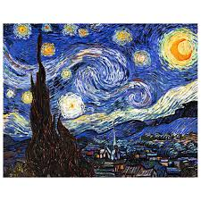
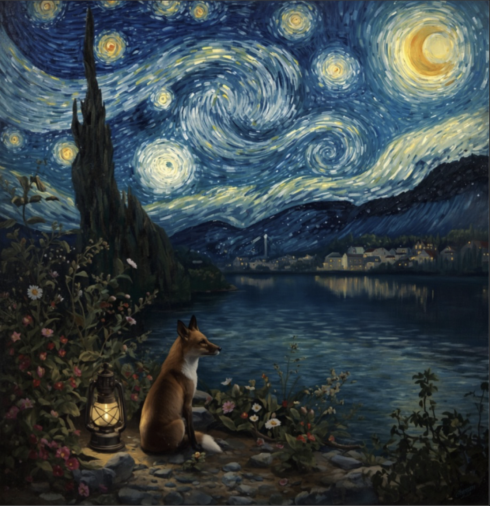

Chef-d’œuvre incontournable peint en 1889, La Nuit étoilée de Vincent van Gogh frappe par son ciel nocturne en plein tumulte, illuminé d'étoiles éclatantes et d'un croissant de lune vibrant qui s'enroulent en de puissants vortex de couleur. Au premier plan, la silhouette sombre d'un cyprès s'élève comme une flamme vers le cosmos, dominant un village provençal paisible qui s'étend en contrebas. À travers ses touches de pinceau épaisses, rythmées et chargées de matière, l'artiste ne cherche pas à reproduire fidèlement la réalité, mais à projeter toute l'intensité de son monde intérieur, transformant un simple paysage en une vision mystique et profondément émouvante.

La Nuit étoilée est un tableau peint par Vincent van Gogh en 1889. On y voit un ciel nocturne rempli d’étoiles brillantes et d’une grande lune. Le ciel est animé par de grands tourbillons bleus qui donnent une impression de mouvement. En bas du tableau, on aperçoit un petit village calme avec quelques lumières allumées. À gauche se dresse un grand cyprès sombre qui monte vers le ciel. Les couleurs dominantes sont le bleu, le jaune et le blanc. Grâce aux coups de pinceau épais et aux formes tourbillonnantes, le tableau exprime à la fois la beauté de la nature et les émotions de l’artiste.
Artiste : Vincent van Gogh Année : 1889 Titre original : The Starry Night (La Nuit étoilée) Technique : peinture à l’huile Matériaux : huile sur toile Dimensions : 73,7 cm × 92,1 cm Style : postimpressionnisme